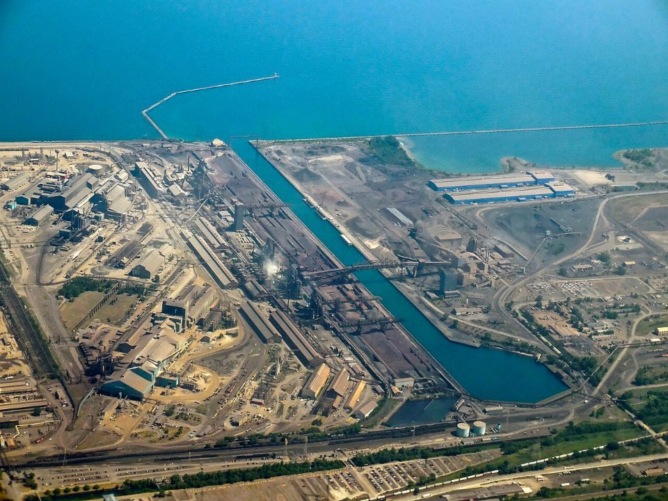
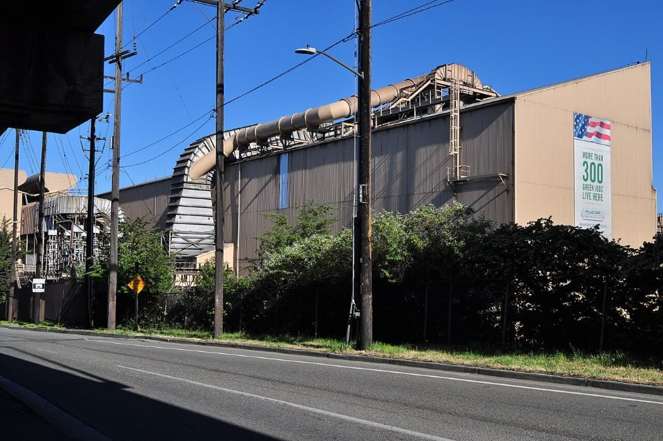
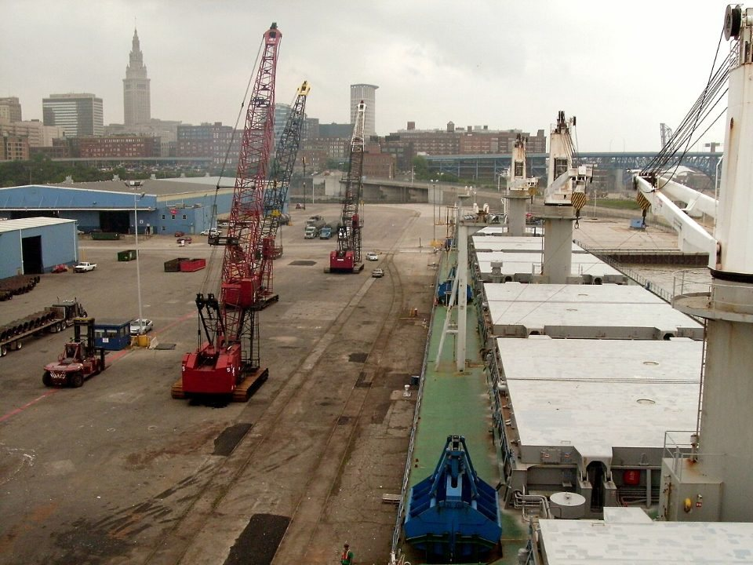

GLOBAL MILLS · UNITED STATES · 2026.09
美國鋼市 9 月觀察：產能利用率衝上四年高點，熱軋價格年初至今漲近三成
鋼鐵潮流工作室 · 發布 2026.10.10

本期重點
美國鋼市 9 月延續今年「量價齊揚」的格局。9 月 12 日當週粗鋼產能利用率衝上 82.3%，是 2022 年 5 月以來最高；Nucor 熱軋鋼捲現貨價 9 月以來幾乎每週調漲，10 月 5 日來到每短噸 1,230 美元，比年初的 950 美元高出約 29%。從數據看，這一輪行情的主要推手是政策：50% 的 232 關稅把進口擋在門外，美國鋼廠接手了市占，終端需求的成長幅度則溫和得多。
- 產量創高：年初至 10 月 3 日粗鋼產量 7,197 萬短噸、年增 5.3%，產能利用率平均 79.0%，高於去年同期的 77.1%。
- 價格續漲：Nucor 熱軋現貨價 9 月起幾乎每週加價 10 美元，交期維持 3 到 5 週，薄板與厚板現貨供給偏緊。
- 進口大減但回溫：1–8 月成品鋼進口年減 18.5%，但總進口已連續兩個月月增，8 月成品鋼進口市占 17.5%，雖比 7 月的 18% 略降，仍高於年初以來平均的 16%。
- 需求溫和：8 月鋼材服務中心出貨年增 11.6%，9 月新車銷售初估年增 5.5%，需求有支撐，但成長幅度遠低於價格漲幅。
- 獲利跳升：Nucor 預估第三季每股盈餘 5.55 至 5.65 美元，是去年同期 2.63 美元的兩倍以上。
關鍵數字
產量：產能利用率一度創四年新高
依美國鋼鐵協會（AISI）每週統計，9 月美國粗鋼產量在每週 178 萬至 190 萬短噸之間波動。9 月 12 日當週產量 190 萬短噸、產能利用率 82.3%，是 2022 年 5 月底（82.4%）以來最高；隔週一度回落 6.1% 至 178.5 萬短噸、利用率 77.9%，9 月 26 日當週再回升到 184.5 萬短噸、80.5%。10 月 3 日當週為 180.1 萬短噸、78.3%，仍比去年同週高 4.8%。
拉長來看，年初至 10 月 3 日累計產量 7,197 萬短噸，比去年同期的 6,836 萬短噸多出約 360 萬短噸，年增 5.3%。對照 2025 年底，12 月最後一週的利用率只有 74.0%，今年的產線明顯開得更滿。
價格：Nucor 9 月起幾乎每週加價
Nucor 通常在每週一公布的熱軋鋼捲現貨價（Consumer Spot Price，CSP），是觀察美國平板鋼價最直接的指標。今年 1 月 5 日 Nucor 把 CSP 維持在每短噸 950 美元，結束了去年 10 月起連續九週的調漲；此後價格一路墊高，8 月底到 1,185 美元，9 月 8 日起幾乎每週再加 10 美元，10 月 5 日來到 1,230 美元，交期維持 3 到 5 週。
市場成交價也跟著走高。據 IndexBox 引述 Kallanish，10 月 2 日美國熱軋現貨價約每短噸 1,210 至 1,220 美元，去年同期只有 825 至 865 美元。據 IndexBox 引述 Steel Market Update，薄板與厚板的現貨供給偏緊、交期拉長，這種情況可能延續到第四季。

原料端反而相對平穩。9 月美國廢鋼結算價大致持平，業者解讀是鋼廠訂單滿檔、成品鋼與廢鋼的價差很寬，沒有壓價的動機；10 月初的早期成交則顯示底特律地區碎鋼（shredded）與重型廢鋼（P&S，板材與結構料）每長噸上漲 20 美元，新料（busheling）上漲 10 美元。成品價漲、原料價穩，代表以廢鋼為主原料的電爐鋼廠利差擴大。
這直接反映在獲利上。Nucor 9 月 17 日預估第三季（截至 10 月 3 日）每股盈餘 5.55 至 5.65 美元，高於第二季的 5.04 美元，也是去年同期 2.63 美元的兩倍以上。公司說明，鋼廠部門獲利增加主要來自平均售價上升，出貨量則大致持平。
進口：232 擋住大門，但 8 月開始回流
美國自 2025 年 6 月起對進口鋼材課徵 50% 的 232 關稅（英國 25%）。AISI 統計，2026 年 1–8 月美國鋼材總進口年減 15.1%，成品鋼進口年減 18.5%；近 12 個月（2025 年 9 月至 2026 年 8 月）成品鋼進口更比前 12 個月少了 22.8%。
不過，進口已有回溫跡象。8 月總進口 234.6 萬短噸，月增 3.4%，7 月也比 6 月增加 7.4%；成品鋼進口市占估計為 17.5%，比 7 月的 18% 略低，但仍高於 1–8 月平均的 16%。主要原因在於美國鋼價持續上漲，即使加上 50% 關稅，部分進口鋼材仍有價格空間。Steel Market Update 7 月底的報導指出，歐洲進口材已接近與美國國內價格持平，東南亞材則仍有相當折價。
來源國的消長也值得注意。近 12 個月，南韓對美出口增加 32%、越南增加 22%；同期加拿大減少 41%、巴西減少 28%、墨西哥減少 37%。加拿大、墨西哥這兩個北美鄰國受關稅戰衝擊最深，南韓、越南反而擴大了份額。

政策：232 今年的兩次大調整
232 關稅在今年做了兩次重要調整，方向是擴大課稅範圍，同時對部分產品放寬：
- 4 月 6 日起改以完稅價格全額課稅：過去含鋼、鋁、銅的衍生產品只就其中的金屬價值課稅，新制改對整件商品的完稅價格課徵。全部或幾乎全部由鋼、鋁、銅製成的產品課 50%；大量使用這些金屬的衍生產品課 25%；特定工業與電網設備課 15%（至 2027 年底）；以美國金屬在海外製造的產品課 10%；第 72 至 76 章以外、金屬價值占比 15% 以下的產品則不課。
- 6 月 8 日起的調整：針對附件所列產品實施暫行稅率框架，適用至 2027 年 12 月 31 日；同時把視為「完全使用美國金屬」的門檻由 95% 降為 85%（以重量計）；15% 稅率擴大到部分農業機械、移動式工業設備與住宅用空調；鋼製貨架則首次納入課稅。
對鋼廠而言，鋼材本身的 50% 稅率沒有變，但鋼製品與衍生品改按整件完稅價格課稅，稅基擴大，等於提高了下游進口成品的成本，也間接保護了美國國內的用鋼產業。
需求：有支撐，但追不上價格
- 流通業出貨：金屬服務中心協會（MSCI）統計，8 月美國服務中心鋼材出貨比去年同月增加 11.6%。
- 汽車：9 月美國輕型車銷售初估 132 萬輛，年增 5.5%，成長速度比 8 月放緩。
- 非住宅營建：反映非住宅建案規劃的 Dodge Momentum Index 9 月為 288.0，月增 2.4%。
- 資料中心與能源：早在去年底，美國買方與鋼廠就預期資料中心會是今年用鋼最強的領域，並帶動電力相關投資；本刊〈AI 吃電也吃鋼〉有更完整的介紹。
綜合來看，需求有成長，但幅度遠小於價格漲幅。本刊判斷，今年美國鋼價上漲的主因是進口被關稅擋下後，國內鋼廠取得定價主導權，而不是終端需求爆發。這也意味著，一旦進口持續回流或需求轉弱，價格的支撐會比表面上脆弱。
對台灣的意涵
- 價差仍在，但競爭者已先卡位：美國鋼價持續走高，據 Steel Market Update 7 月底的報導，即使加上 50% 關稅，東南亞鋼材仍有相當折價，這也是進口回流的原因之一。不過南韓、越南已擴大在美份額，台灣鋼材若要增加輸美，還得考量交期與日後被提起反傾銷調查的風險。
- 鋼製品壓力更大：今年 1 月台美對等關稅談定 15% 時，螺絲公會即指出螺絲扣件屬 232 範圍，仍適用 50% 稅率。4 月新制上路後改按整件完稅價格計稅，稅基比過去只算鋼材價值時更大；個別產品實際適用 50% 或 25%，要依新制附件的分類確認，手工具等也依金屬含量而定。詳見〈從台灣製造到台灣創造〉。
- 韓國鋼廠赴美設廠：現代製鐵路易斯安那廠等投資，主要目的之一就是避開關稅、直接在美國供貨，未來將進一步改變美國進口來源的結構。詳見〈現代製鐵路易斯安那廠〉。
觀察重點
- Nucor 的每週現貨價能否延續漲勢，以及交期是否開始縮短。
- 9 月進口數據（AISI 約 10 月下旬公布），確認進口回流是否延續。
- 10 月廢鋼結算價，以及電爐鋼廠利差的變化。
- Nucor、Steel Dynamics、Cleveland-Cliffs 預計 10 月下旬起陸續公布的第三季財報與第四季展望。
- 232 暫行框架與各國談判的後續調整。
延伸閱讀
資料來源
- AISI: US raw steel output climbs as capability utilization hits multi-year high（Steel Market Update，2026-09-14）
- AISI: US raw steel production in week ending September 19（Yieh）
- AISI: US raw steel production in week ending October 3（Yieh）
- Nucor Continues to Hold Steel Price at $950/Ton（SteelIndustry.news，2026-01-05）
- Nucor lifts HR coil CSP to $1,185/ton（Steel Market Update，2026-08-31）
- Nucor increases spot HR to $1,220/ton（Steel Market Update，2026-09-28）
- Nucor Hikes Hot-Rolled Coil Spot Price Again to $1,230（IndexBox，2026-10-05）
- US HR prices remain firm, imports slip（Steel Market Update，2026-07-31）
- October scrap prices seen rising in early trading（Steel Market Update，2026-10-06）
- Nucor Announces Guidance for the Third Quarter of 2026 Earnings（Nucor，2026-09-17）
- AISI: U.S. Finished Steel Import Share Reaches 18% in July（Sunshine Global）
- Steel Imports Up 3.4% In August vs. July（AISI）
- New rules for calculating Section 232 tariffs（KPMG，2026-04）
- 螺絲業未受惠新關稅 螺絲公會理事長：維持原案未變（CMoney 轉載，2026-01-20）
- 螺絲扣件關稅維持50% 仍適用232條款衝擊產業（公視新聞，2026-01-16）
- Section 232 Tariffs Restructured: New Tiers（Freight Figures）
- Trump administration further adjusts Section 232 tariffs（PwC）
- August Data Shows Year-Over-Year Shipment Increases（MSCI）
- US light vehicle market grows in September（Just Auto，2026-10-02）
- Dodge Momentum Index up in September（Steel Market Update，2026-10-07）
- Viewpoint: US flat steel demand hinges on data centers（Argus，2025-12-31）
內容僅供產業資訊參考，不構成投資建議。新聞版權屬原出處所有。